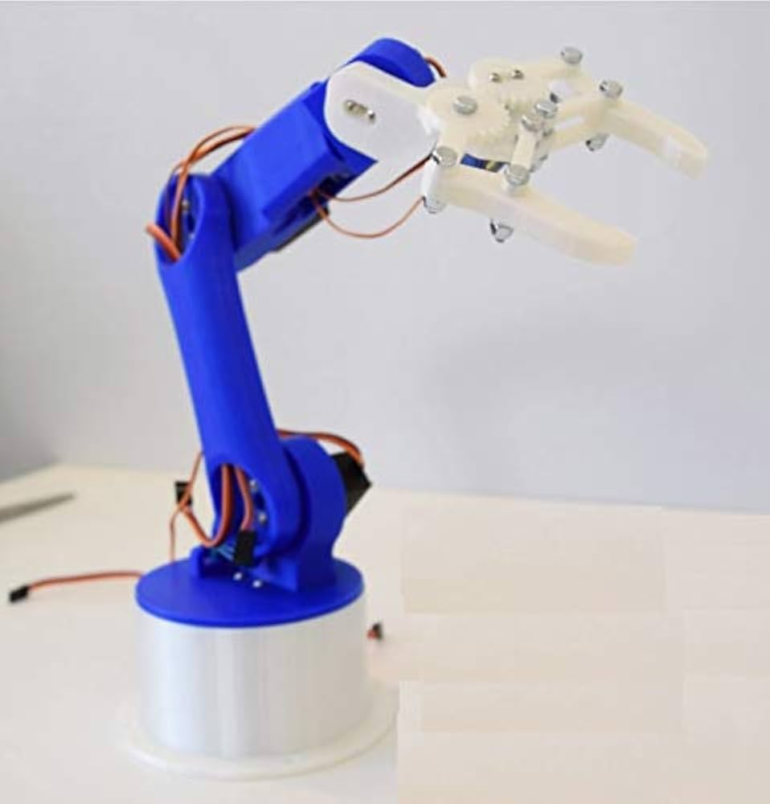

The Automated Robotic Arm Project is focused on building a robotic arm that can perform
a variety of tasks autonomously, such as picking, placing, and assembling objects. The idea
originated in early 2025 and aims to create a low-cost, open-source robotic arm suitable
for educational purposes and small-scale automation tasks.
We use a combination of motors, sensors, and a microcontroller to control the arm's movement.
The goal is to achieve precise motion control and adapt to various work environments.
The design of the robotic arm incorporates a 5-DOF (Degrees of Freedom) structure, which
allows it to move in multiple directions with high precision. The arm uses a combination of
servo motors and stepper motors for different joints. The control system is based on an Arduino
or Raspberry Pi, which communicates with the motors and sensors.
The design also includes a gripper mechanism that can pick up small objects with ease.
Below is an image of the initial design prototype.

The robotic arm is programmed to execute specific tasks autonomously. These tasks include:
1. Object Grasping: The gripper can pick up and hold objects securely.
2. Object Placement: The arm can place objects in precise locations.
3. Automated Assembly: The arm can be programmed to assemble components based on a defined sequence.
The functionality is powered by a series of sensors that help the arm to detect objects,
measure distances, and avoid obstacles. The movements are controlled through an algorithm
that allows for smooth transitions and precise actions.
Future developments for the robotic arm project include:
1. Integration with AI: We plan to implement AI algorithms that will enable the arm to
learn new tasks and adapt to different environments.
2. Enhanced Precision: Using more advanced sensors and actuators to improve the precision
of the arm's movements.
3. Remote Control: A wireless control system will be introduced, allowing users to control
the arm from anywhere via an app or web interface.
Stay tuned for more updates!